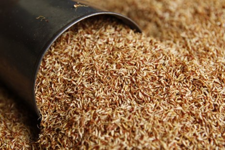
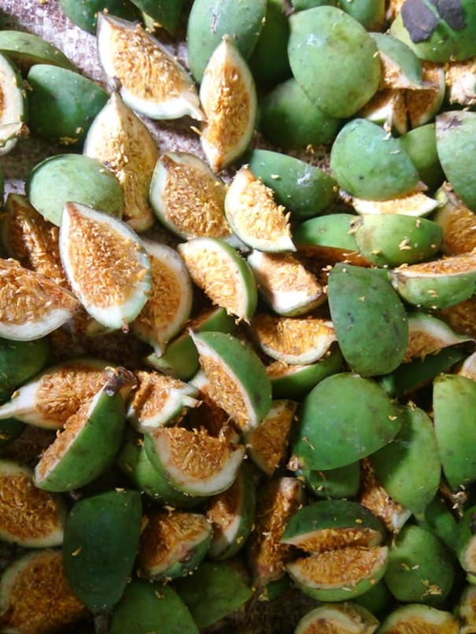
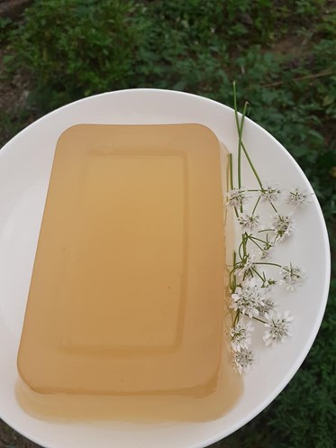
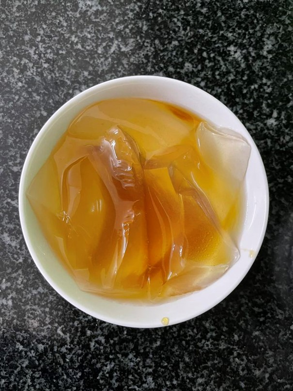

Thạch trắng
Mác púp (quả mác púp) là tiếng của người Tày miền Đông Cao Bằng. Cây mác púp là dạng cây leo, thường bám vào các loại cây to hoặc trụ trên các mỏm đá vôi để sinh tồn, phát triển.
Mác púp nở hoa, kết trái từ tháng 3 - 4 âm lịch. Đến tháng 7 - 8 âm lịch, bà con vào rừng thu hái quả. Sau đó, quả mác púp được rửa sạch, phơi cho ráo nước, bổ vỏ tách lấy hạt có màu vàng nhạt. Hạt tép mác púp phơi nắng để khô được cho vào túi nilon dày hoặc nồi nhôm để bảo quản.
Theo dân gian, hạt mác púp vị ngọt, tính mát, có tác dụng tráng dương, lợi thấp, bổ thận, thông kinh lợi sữa, tiêu thũng giải độc, tốt cho đường tiêu hóa..., đặc biệt hạt mác púp không chỉ là vị thuốc mà còn được chế biến thành thạch trắng để giải khát trong những ngày nắng nóng.
Để có được món thạch trắng mác púp khá đơn giản, người làm thạch chuẩn bị nước đun sôi để nguội, chậu, 1 túi vải sạch. Sau đó, tiến hành đổ nước xuống chậu theo công thức 2,5kg nước tương ứng với 200g hạt tép quả khô cho vào túi vải. Tiếp theo, đưa túi vải vào chậu nước vò nhẹ để các chất thạch màu trắng đục từ hạt tiết ra, khi thấy xuất hiện váng màu trắng đục phủ gần kín trên bề mặt nước thì ngừng vò túi hạt tép. Để chậu nước thạch sau khoảng từ 1 - 2 giờ, thạch sẽ đông chắc hoàn toàn.
Nước đường để ăn với thạch trắng thường là đường làm từ mật mía (đường phên) hoặc đường hoa mai. Người ta dùng chiếc muôi hoặc dao cắt từng khoanh thạch nhỏ cho vào cốc, đổ lượng nước đường vừa phải tùy theo sở thích của mỗi người là đã có thể thưởng thức món thạch đặc biệt này.
Nếm miếng thạch giòn, tan đầu lưỡi và cảm nhận vị ngọt dịu, thanh mát đặc trưng của thiên nhiên vùng cao sẽ khiến du khách thích thú và thêm yêu non nước Cao Bằng.